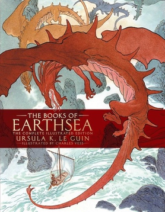
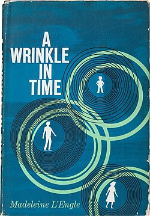
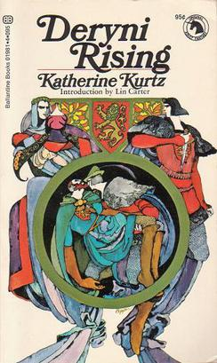

Some modern Fantasy writers who touch on religion in one way or another. These are Ursula K. LeGuin, Madeline L'Engle, and Katherine Kurtz. The plan is to spend 1 weeks on these authors and spend the last three weeks on Harry Potter.
URSULA K. LeGUIN (1929-2018)
Ursula LeGuin has been hard to classify for some of her writings, she says, are science fiction, some fantasy and some 'realist' or 'magical realism'. She is best known for her fantasy novels
She was born to a writer, Theodora, and an anthropology professor at the University of California. She says she lived in an old tumble down ranch in the Napa valley that was a gathering place for scientists, writers, students and native Americans. She loved mythology, particularly Norse myth.
She grew up with no religious practice of any kind; she once related and there was also no feeling that any religion was better or worse than any other: they just weren't part of her life, she said. "They were something other people did"
Eventually, LeGuin arrived at a strong respect for Taoism, an Eastern Religion of simplicity and acceptance. The Taoist texts of the I Ching and the Tao Te Ching have influenced many of her books.
She always thought of herself as a writer, submitting her first story to Amazing Stories at age 12, and receiving a rejection slip. She got a Fulbright scholarship and did doctoral work at Columbia University in French and Italian Renaissance literature. She met her husband on a trip to France, married, had 3 children while her husband taught at Emory university in Atlanta, Ga.
During the 1950's she wrote 5 novels, 4 of them set in the imaginary country of Orsinia, but was unable to find a publisher willing to take the risk on her unusual style. Her early works, part of the HARINISH CYCLE, contain the central idea that humanity came from the planet Hain, which colonized several other planets and whose colonies were separated by a galactic war. It includes several titles including The Left hand of Darkness and The Dispossessed.
LeGuin's fiction is quite risky: it is full of hypotheses about morality, love, society, and ways of enriching life expressed in the symbolic language found in myth, dream or poetry. However, the greater the risk, the greater the reward, and for the reader, the reward is a glimpse of something glowing, something very much like truth.

THE EARTHSEA TRILOGY:
This was LeGuin's second trilogy (actually, now 4 books) and her first attempt at fantasy and has been popular for over 3 decades. She developed the novels from stories she had written earlier about the world of Earthsea, a place similar to the United States in climate, and much like the 15th century in its lack of industrialization.
Her extensive exposure to Native American legends as well as Norse Myth is evident in her writing. The Norse is quite apparent with the use of the Kargs, a fair skinned, blond race of big, strong people who worship dual or brother gods.
The other very noticeable idea in her writing, especially in this trilogy, is that the Earthsea revolves around the principles of Taoism. As a self-proclaimed Taoist, LeGuin manufactures a world based on two of the main principles of Taoism.
- The theory of inactivity, (or wa wie) in which one acts only when absolutely necessary, and
- the relativity of opposites which is the belief that opposites are interdependent, and their interdependence results in the equilibrium.
Both of these principles will be explained further in regard to the individual works.
The original three books can be described a s coming-of-age novels in which three separate individuals struggle to become mature, responsible, whole adults.
The Wizard of Earthsea: The first in the series, follows the hero, Ged a young sorcerer's apprentice, to adulthood.
When Ged saves his village from an attack by the Kargs by casting a fog-spell, he is taken on as an apprentice by a great mage at Re Albi named Ogion. Ged takes the opportunity to travel to the Isle of Mages where he is given the introduction as "one who will be greatest of the wizards of Gont."
He trains, and though bored, learns the TRUE names of things. Unfortunately, at one point pride overwhelms him and he challenges another apprentice but ends up nearly losing his life while a nameless evil shadow roams Earthsea. He finally recovers and receives his yew staff, embodying his achievement of magehood.
In an attempt to save a boy’s life, he goes to the realm of the dead. Upon trying to return, he runs into the shadow of evil he had loosed and barely makes it back. He begins his journey to escape the un-named terror of the shadow. After many narrow escapes, Ged flees wearily to his mentor on Gont. He is advised to turn the tables on the shadow: he must be the hunter, not the hunted. Ged and a friend sail to find the shadow for he realized the responsibility he had acquired by loosing the evil.
Upon finding it he is able to name it with his own name, Ged, for the shadow was merely him, his own dark side. This journey was necessary to make him whole.
This first book in the series exemplifies the Taoist philosophy. Ged embodies the Taoist way. The first principle of the Tao Te Ching is the theory of inactivity which means that people should only act when necessary. Ged learns thru his mistakes and the teachings of the Masters that magic should not be used for fun. It serves a purpose and should only be used when it is needed, not because someone wants to see a trick.
Ged did not learn this lesson from his master, who rarely used his magic. Instead of realizing that his master was concerned about the Balance, the Equilibrium, Ged found himself irritated that he would let it rain on them rather than turning the storm aside.
The second, the relativity of opposites, forms the basis of the stability of Earthsea. in Taoist thought this principle, that opposites are dependent upon each other is symbolized by yin and yang. The circle containing black and white swirls which originate from each other and then end in each other. This is the Equilibrium that the masters try to teach Ged. The Master Hand explains the concept of balance: "To light a candle is to cast a shadow."
Twice Ged proves he is maturing for he refuses to take the "quick-fix" solutions offered him in his problem of the Shadow. One would have endangered his islands, the other he realized would solve nothing. Thus, he matured over the course of the story.
The Tombs of Atuan: Was LeGuin's second book in the trilogy and her first female heroine. Tenar was taken from her parents at age 5 to a desert island called the tombs of Atuan. Because she was born on the day the old priestess there died she is believed to b e a reincarnation of her.
She learns rituals, traditions and serves the Nameless ones but when she explores the sabyrinth and sacred places underground, where she alone is allowed, she finds a young man (who is Ged) who is not struck dead and who uses light where he shouldn’t. She had thought the underground to be full of evil, death and decay but with the light and becoming friends with Ged, she finds it is really beautiful.
She smuggles him food and water and eventually leads him to the treasure room to find what he seeks--the other half of the ring of Erreth-Akbe. He persuades Tenar to leave the darkness and return to the light. She agrees to go with him.
The great palace crashes into the tombs as they escape. Darkness has lost its power and the Equilibrium is re-established. Tenar at first resents Ged for taking her from the only life she had known but she comes to realize that rather than taking her life, he has actually given her life back.
Like Ged, part of Tenar's journey into adulthood is taking responsibility for her actions and becoming a whole person, instead of a dark half. She had only served the dark ones, the evil. There were no consequences for her actions because she was high priestess. She answered to no one. When Ged gives her back her name, the light and the dark come together to form one whole. The rejoining of the ring of Erreth-Akbe symbolically represents this wholeness.
The Farthest Shore: The final book introduces a new character, Arren, son of the Prince of Enlad brings bad news to the archmage. Wizards have lost their power in Enlad, even simple spells of binding and finding, have been forgotten.
Ged, now Archmage, and Arren begin their odyssey to find the cause of forgetting the art of magic. During their voyage they realize that this loss of craft is spreading, even to the dragons. Finally, Ged and Arren encounter Cob, the wizard responsible for the problem.
Cob had opened a doorway in the land of the shadows and offers eternal life to the men of power, the mages, but it is actually eternal death-life in the land of the shadows. Arren and Ged journey there and Ged uses his power to close the breach. Arren struggles to get Ged and himself out of the land of the shadows. They manage but Ged ends powerless because he used all of his power.
The Equilibrium is restored: Ged closed the door of darkness, but, in the process depleted his strength. Thru his willing sacrifice, the Equilibrium is restored.
Besides being a coming of age story, The Farthest Shore focuses on the acceptance of death a s a part of life. The title itself can refer to death, and the Taoist philosophy of yin and yang supports the idea that life comes from death as death comes from life.
The twist in The Farthest Shore is that one wizard is trying to eliminated death. Ged and Arren are not trying to stop Cob because he is inherently evil; he is not. But he is disturbing the balance. His fear of death has caused him to search for a way to overcome death, and he believes he has.
Ged and Arren have to master their own fear of death and realize that it is a natural part of the Equilibrium in order for them to defeat Cob, close the gap, and restore balance.
This is the end of the original trilogy.
Tehanu: After nearly two decades, in 1990, LeGuin published the fourth and last book in the series. Tehanu traces Ged's life after he is no longer a mage. It also reunites Tenar and Ged and introduces a new champion of the Equilibrium--Tehanu.
Tehanu, a young girl who has been raped, burned and disfigured by her "parents" is adopted by Tenar and raised as her own. The old mage, Ogion, summons Tenar when he is about to die. He sees potential in Tehanu and asks Tenar to train her. After a series of problems, including an evil mage who wants to kill Tenar because she is a woman with power, and Ged for ruining his chance at immortality (in the Farthest Shore), they are rescued by a dragon summoned by Therru who kills the badies. they all choose to stay together.
The first three books deal mainly with the issues of growing up, learning to accept responsibility and accepting death as part of life. Tehanu delves into the issues of love and the roles of men and women. Tho the main female character, Tenar, is strong wherever she appears, in Tehanu, LeGuin seems to be portraying a feminist angle in questioning the traditional roles.
Tenar is not happy. She wonders why women cannot become mages and why the only hope for Therru seems to be learning about weaving or other equally domestic trades.
This again mirrors Taoist philosophy. Two opposites that are interdependent are males and females. Tenar comes to realize that men and women, though they have different kinds of power, are both powerful, nonetheless. Aspen, the evil mage, does not realize this. He is resentful of women who think they are powerful and so tries to kill Tenar. Such an action would destroy the Balance, and he is not permitted to do so.
The Earthsea Trilogy is classified as children's books but Tehanu should be read at an older age it is recommended. But, Earthsea is also a series for adults. They are so well written that adults will find a level within them worthy of intellectual reading. They are enjoyable, intriguing, and stimulating, even for adults.
MADELEINEL'ENGLE: (1918-2007)
Madeleine L'Engle, best known for her Wrinkle in Time books (4 of them), was born in 1918 to a WW I veteran who died while she was young. Tho always primarily interested in writing, she worked in theatre for a while after graduating from Smith College.
She married an actor but took to writing full time under the name L'Engle, originally a surname from her mother's side of the family. After early success she had a 10-year dry spell when few of her writings were published. After a 10-week camping trip across the continent and back (to NYC), she had the idea for A Wrinkle in Time. After several rejections, it was published and won the Newbery Medal in 1963 and became a perennial favorite with children and adults alike.
Her husband, Hugh Franklin, became a soap opera star playing Dr. Charles Tyler in All my Children. He died of cancer in 1986 but Madeline continued to write a wide variety of books.
She wrote Science fiction, fantasy, suspense and mystery novels, mainstream adult novels, poetry, plays, journals, etc. that deal with believable problems in both realistic and fantastic settings. She died in Sept. 2007
I am going to focus on her main fantasy/ sci fi books, The Wrinkle in Time series for this course.
A Wrinkle in Time: Madeleine L'Engle had a difficult time finding a publisher for this novel being rejected by 26 publishers in 2 years, citing various reasons. Neither science fiction nor fantasy, the book was impossible to pigeonhole. Most objections were that it would not be able to find an audience, that it was too difficult for young readers. However, the public loved it and it won many awards in subsequent years.

In A Wrinkle in Time, Meg Murry-a girl with the gift of extrasensory perception-- travels in time to rescue her father, a gifted scientist, from the evil forces that hold him prisoner on another planet.
Meg and her brother Charles Wallace have several problems. Meg is unpopular and has trouble in school, people think Charles Wallace is slow, and their father missing for some time which causes suspicion among the neighbors and other school students.
Their problems seem less important after a visit by the strange Mrs. Whatsit, Mrs. Which and Mrs. Who -- when the children learn about a cosmic battle between good and evil that their father is somehow involved i n and that they are to rescue him. To release her father, Meg must learn the power of love.
A Wrinkle in Time is a book that combines devices of fairy tales, overtones of fantasy, the philosophy of great lives, the visions of science, and the warmth of a good family story with a story of self-discovery and good vs. evil. It definitely has Christian overtones and a good message about conformity.
L'Engle says of it that it was a book that "possessed" her. She says she simply had to write it and it was only after writing it that she realized what some of it meant. It is exuberant, original, vital, exciting, funny ideas, fearful images, amazing characters, and beautiful concepts sweep through it and full of truth.
A Wrinkle in Time seems to be a straightforward sci-fi story when L'Engle takes a hard turn into religious territory, as Mrs. Who quotes the opening of the Gospel of John, and Charles Wallace responds by yelling out that Jesus is fighting the Black Thing. However, L'Engle keeps the story from becoming a pure vehicle for proselytizing when the three children name other historical figures who have fought, including Euclid, Copernicus, Bach, Gandhi, and the Buddha. This does two things: For a secular reader, they've just realized that they're reading a story that has a spiritual element to it, but they've been reassured that they're not going to be hit over the head with Gospel allegories. At the same time, a Christian reader might be offered to have Jesus show up simply as part of a list of great Earthlings. By introducing the religious aspect of the fight this way, L'Engle is marking her book as a liberal Christian story, that invokes Jesus and New Testament quotes but also leaves room for other religions and science to be important elements in the human fight against hatred. This has led to the book being challenged and banned for either being too religious or not religious enough.
The rest of the Time Quintet continues this tap dance, as the children meet Cherubim, learn to love people they consider enemies, and discuss the value of sacrifice in A Wind in the Door; deal with an irascible angelic unicorn and cancel the apocalypse in A Swiftly Tilting Planet (whose title, by the way, is a line from a popular Celtic Catholic prayer called St. Patrick's Breastplate); and literally help Noah build the ark in Many Waters. Then St. Patrick's Breastplate is revisited a generation later, as Meg Murry's daughter Polly recites it when she's nearly sacrificed by ancient Celts after she accidentally goes back in time during a walk in the woods... look, it makes sense in context. The religion presented in the books is based in compassion and love, but doesn't get too bogged down in denominations —the constant refrain is simply that the universe is much bigger than any of the individual character, and that everyone deserves space and respect, and that maybe your own narrow view of the ward isn't the only one.
Katherine Kurtz: Born in October, 1944 during a hurricane in Coral Gables, Florida she considered this a auspicious beginning. She early on showed an aptitude for science and graduated from the University of Miami with a B.S in science.
After a year of medical school she decided she was not suited to being a physician, so she moved from Florida to Southern Calif to do graduate work in English History. This training would serve her well when she began to write her Deryni books, the focus of this class.
Around this time, she joined the Society for Creative Anachronism, a medieval recreation group which was still in its infancy at that time. She still holds the title of Countess Bevin and has a coat of arms. She gives credit to the SCA for a lot of what she learned for her medieval books.
Just before her 20th birthday she apparently had a very vivid dream, the gist of which forms the base for her stunning Deryni novels. Her first story Deryni Rising changed somewhat from the dream it was a great success and is still in print after almost 50 years, a remarkable feat for any writer.

In 1986, she and her husband of 3 years, Scott MacMillan, a publisher and producer, decided to move to a castle in Ireland.
In 1991 she published her first book in collaboration with Deborah Turner Harris, The Adept series was the result. She had spent 11 years with the LAPD Police academy as a Senior Training technician (1969-1980) so was well equipped to deal with a detective, i.e. with special talents, in this series.
She plans at least two more trilogies which are probably intended to cover the 200-year gap between the Heirs of Saint Camber trilogy and the Chronicles of the Deryni trilogy. There are currently 5 trilogies in this universe.
Her 5th trilogy is now out with “In The Kings Service (2003), Childe Morgan (2006) and “The King’s Deniyn (2014).
The world of Kurtz's Deryni series is that of Europe and the surrounding areas of the 10th to 12th centuries of the common era. With a very well redrawn geography, changed terrain features, cities renamed, and the total absence of Rome as a city, a referred to culture in the past, and, in keeping with Katherine Kurtz's Celtic emphasis, no mention of any ecclesiastical control outside of the respective kingdoms that appear in her books.
The creative addition to this scenario are the Deryni, a hereditary group possessing what the general population describe as magical and possibly evil powers. In the pre-history prior to the earliest chronological novel in this series the kingdom of Torenth, to the east of Gwenyd, have by military means installed an imported demyi royal house upon the kingdom of Gwenyd.
The Deryni looked to a source, Cariesse, as an actual place but by the mid 6th century it had become symbolic for much the Deryni had come to revere, a magical wellhead for the quasi-druidic, celto-Christian mysticism that was to become the hallmark of Deryni esotericism.
For several hundred years the Deryni and humans lived in relative peace. In 822 when King Festil of Torenth invaded, massacring the royal family, the Haldanes, relations deteriorated. Festil and his Deryni followers exploited their advantage by abusing the use of magic and power eventually leading, in 904 to the ouster of the last Torenthi king and restoration of the old human line, the last of the Haldanes.
The instrument of the Torenthi downfall was Camber MacRorie, Earl of Culdi, whose great grandfather had come with the conquerors. Unfortunately, Deryni magic itself and not abuse of power came to be blamed for the evils of the Interregnum. The regents for the sons of Haldane were as abusive as their former masters.
In a few years Deryni remaining in Gwynedd found themselves politically, socially, and religiously disenfranchised, the new masters using any conceivable pretext to seize the wealth and influence of the former rulers. This included the religious hierarchy of the now human dominated church.
The Deryni were regarded as evil in and of themselves, the devil's brood, beyond the salvation of the church. Only total renunciation of one's powers might permit a Deryni to survive, and then only under rigid supervision. The slightest transgression against a rigid code of permissible behavior could lead to death.
This didn't happen overnight, of course, and most failed to realize how the balance was shifting until i t was too late. The great Anti-Deryni persecutions that followed the death of Cinhil Haldane reduced the already small Deryni population of Gwenedd by fully two thirds. Many fled, many went underground keeping their true identities secret or simply suppressed who they were not passing on their once proud heritage.
This is the general background of the Deryni. These stories are told in far greater detail in the 4 trilogies. In Chronological order: The Camber trilogy including: Camber of Cluldi, Saint Camber, and Camber the Heretic chronicle the overthrow of the last Festillic king by Camber MacRorie and his children, their restoration of King Cinhil Haldane, and what happened immediately after the death of King Cinhil, thirteen years later. The political connivance of corrupt regents moves the deryni race into an ever-darker age as the series concludes.
Chronologically the trilogy The Heirs of St. Camber follows on the Camber trilogy picking up within a few months, which includes in order, The Harrowing of Gwynedd, King Javen's year, and The Bastard Prince.
The Harrowing of Gwynedd shows the ever more self-serving regents virtually ignoring the young kind Alroy (age 13) and attempting to gain power for themselves, including a graphic scene of the founding of a new monastic order whose only thinly veiled purpose is to seek out and kill Deryni.
The other two books in this trilogy cover the other brothers attempts to rule in spite of the evil regents. the youngest son, Rhys Michael through careful connivance, prayer, and a great deal of luck makes the attempt to throw off the yoke of the regents and make a bid for the freedom of his house. A confrontation with Torenth and the introduction of new characters make the plot move along.
CHRONOLOGICALLY: the first 3 novels, called the Chronicles of the Deryni: (1970’s) Deryni Rising, Deryni Checkmate and High Deryni take place nearly 200 years later, when anti-Deryni feeling has begun to abate somewhat among the common folk but not yet within the hierarchies of the church. The Boy King, Kelson Heldane as he must fight to secure his throne against an evil sorceress, Charissa, who claims a long dead right to the throne. Kelson must walk a fine line to keep his throne and not antagonize the church.
The next two in this trilogy deal with war upon Gwynedd, political intrigue, plots within plots and a love interest for Morgan, one of his advisors.
The final (chronologically) is the trilogy of The Histories of King Kelson. These are made up of: The Bishop's Heir, The King's Justice, and The Quest for Saint Camber. These pick up when Kelson is in his young manhood, at age 17.
Civil war in Gwynedd while Torenth attempts to take advantage of the chaos and stages another invasion attempt. Then, in the final story, The war is over and Kelson and his cousin Conall and blood brother Dhugal search for St. Camber but are lost during a storm on a high mountain.
The kingdom goes into mourning for the king and his friends. However, the next in line is quick to take advantage of his new position as heir and.....well the intrigue never stops.
Enough said about the books, 15 in all plus 2 others on Deryni magic and one called the Deryni Archives which are articles and short stories. Now some more about religion in the stories.
RELIGIOUS FRAMEWORK:
In general, the official institutional church in Gwynedd is very close in structure to the medieval church of our own 10th - 12th century in England, Scotland, Ireland and Wales. The single greatest difference is the Churches’ acknowledgement of the existence of magic. At different times, Gwynedd's church has at least tolerated careful, circumspect use of the magical arts, and sometimes even condoned it.
The second notable difference i s in the hierarchical structure of the Church, owing more to the collegiate structure of the church of England, with its two primate-archbishops as first among equals, then to Romen influence. In the Deryni universe we may postulate a gradual shift from Roman to Byzantine influence in the cognate area of the Mediterranean around the 4th to 5th centuries--a shift that very roughly occurred in our own world.
The subsequent failure of the bishop of Rome to achieve recognition as Supreme Pontiff would have diminished roman influence even further, to the extent that had the Council of Whitby (664), if it still occurred, probably would have been dominated by the native Celtic Christian church established by The Irish missionaries rather than the version imposed by St. Patrick, which was Roman.
In Gwynedd and its environs, this comparatively early shift away from Rome meant that the church retained many of its Celtic roots and hierarchical forms, though the association endured long enough for Latin to become established as the official liturgical language and for many elements of Roman liturgy to become part of the accepted canon.
Structurally, collegiality of the bishops continued to develop, with a handful of powerful regional bishops gradually wielding influence over a larger number of lesser ones, but remaining only primates, first among equals, rather than any single one seizing preeminence.
Thus, we hear no mention of a Pope or College of Cardinals in Gwynedd. Even as close a s Torenth, just to the east of Gwynedd, Kelson is informed that it is byzantine in practice, ie, Eastern Orthodox.
The Moors are known also and several people in the books have a mixed Christian/Moorish heritage. Many Moors are Deryni. And, in fact, one great Deryni adept, Azim, wields both political and esoteric influence. He is probably connected to the s o called "Cambrian Council" made up of top Deryni.
Jews as a group are not mentioned per/se in Gwynedd the reason being that the Deryni serve the purpose as "scapegoats" in that area and astute Jews would have realized this early and capitalized on it, keeping a lower profile then their Deryni neighbors, especially during the Interregnum. There are other groups around as well. There are apparently some pre-christian groups, following a Norse parallel, and some also among the common folk, co-existing with Christianity.
RELIGIOUS ORGANIZATION IN GWYNEDD:
Basically there are two archbishops, the one of Valoret being the first among equals. Then from 4 to 10 additional titled bishops who administers a diocese assisted by the canon priests. then up to 12 itinerant bishops, roving prelates with no fixed sees. they carry out mostly pastoral duties.
There are numerous religious orders whose members assist the clergy, some running schools, hospices and seminaries, among other things. There are a few religious orders that cater to Deryni needs. The ORDER OF ST. GABRIEL, is geared toward the training of healers, or the ORDER OF ST. MICHAEL, or MICHAELINES, which produced military officers, though some humans were in that order because the benefited from the training and discipline.
There were also some all-human orders that dealt with Deryni matters as part of the inquisition. THE ORDER OF THE GUARDIANS OF THE FAITH with its military arm, THE KNIGHTS OF THE MOST HOLY GUARDIANSHIP who developed many and devious ways of dealing with their Deryni adversaries.
The Deryni themselves see no contradictions between practicing Christianity and using their magical powers, so long as those powers are used in an ethical manner. The Deryni practiced meditation techniques, which could also be used by humans, which enhanced the individual’s relationship with the Creative Force. Thus, so called "mystical experience" was more widespread among the Deryni, thus causing more jealousy by humans, particularly among human clergy.
The only group not greatly resented by humans seems to be the healers. They are under a code of ethics more demanding than for ordinary physicians. However, healers are rare even among the Deryni.
Adding to the confusion is the fact that many of the "miracles" reported in sacred scripture can be duplicated by the Deryni, especially those of healing. Indeed, the method with which the Deryni Healers lay hands on their patients to effect healing is indistinguishable from biblical accounts--at least superficially. By that reasoning, if healing comes from God, then Healers, at least, cannot possible partake of the evil carried by the rest of their race. Yet, if this is accepted as a given, then it follows that other Deryni may not be evil either, which opens a floodgate of dangerous speculation.
The Deryni ability to project an aura of light about the head is also a talent of biblical significance--for is an aureole of light about the head not the sign of a saint or an angel? And what of the ability to conjure fire, (as in pillars of, or burning bushes), or cause rain or lightening, or change their shape for disguise.
Yet the fear was that even though these were angelic attributes, Satan himself was a fallen angel, with the same abilities as his heavenly counterparts, and a master of deception. So, what if the Deryni served him?
Rational people can keep these doubts under control but when deryni used their gifts to take advantage of humans, resentment, anger, and impotence in the face of unarguable greater strength soon give way to fear, irrational generalizations about everyone having such abilities, which justifies a backlash of reverse persecution, as soon as resistance becomes possible.
This is what happened right after the death of King Cinhil Haldane, as those long oppressed under the former deryni dictators regain their freedom, and because religious zeal i s one of the more powerful tools available to society, the institutional church becomes one of the prime arbiters of the new morality, "restoring" the balance to the long oppressed human population and meting out "justice" to those who caused their discontent.
Keeping the Deryni out of the hierarchy of the church became by decree of the Council of Ramos in 918, one way of insuring that the church would be purged of all Deryni influence. Thus, Deryni are forbidden to seek ordination on pain of excommunication and death.
The History of the Deryni within the context of the Christianity has not been all negative. At the height of Deryni supremacy in Gwynedd, before the Interregnum, Deryni functioning within the institutional church added to the faith far more than they detracted.
The magic of the all Deryni and mostly Deryni orders such as the Gabrielites and Michaelines brought a richness to Christian expression that is far too seldom glimpsed in our own world--not a substitute for traditional religious belief but an overlap, parallel, and augmentation of the "merely Human" elements.
THE SACRAMENTS:
Because of the Deryni's enhanced abilities, the sacraments are more meaningful to them, more "magical". The thing is that religion, by definition, is magical, dealing with that which lies beyond human comprehension.
The ability to transmit the emotion charged atmosphere thru the various sacraments is not exclusively an Deryni ability; it is only that they may be better at it. The flow of power does not seem to be dependent on Deryni abilities, though perception of that flow may be, at least in degree.
Whatever the source and however it is perceived, the beneficial effect of the sacraments i s apparent in the world of the Deryni as-well as our own, as a potential source of strength, healing, and reconciliation for the communicant. That the humans of Gwynedd are not able to acknowledge this is the source of much of the reactionary behavior of the hierarchy of Gwynedd's Church.